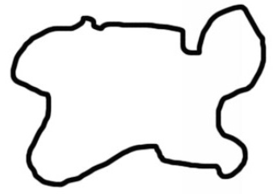
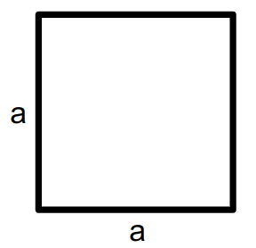
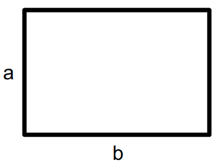

def square_model(a):
return a**25 Models
Throughout this book we will use on quantitative models to describe evolutionary processes. A model is a simplyfied description that captures what we know about a phenomenon of interest in terms of variables and their relations to one another. While models in this sense are always reductions of the real-world process being modeled, they have the benefit that all of their parts can be understood. Moreover, formal models usually incorporate one or several parameters, that is, variables the value of which is mutable. Changing parameter values thus renders different instances of a model that, in turn, allow one to ask the question “What if?” and to abserve the behavior of simulated processes in the long run. Answering this question under different conditions (different parameter settings) then will allow us to draw inferences from the modeling outcomes to interpret our phenomenon of interest.
It is precisely the ability of formal models to be adapted at will why they form the core part of this book. Starting with simple models with only very few variables, we will gradually make them more complex by including additional variables. However, it will remain our attempt to keep our models as simple as possible. While it is theoretically possible to include any number of variables in modeling, more complex models become harder to understand, and the interactions between the numerous variables more difficult to interpret.
As mentioned above, the goal of modeling is often to approximate rather than to recreate a process in the world. Sometimes, the goal is rather to show that a real process does not conform to the outcomes of certain modeling assumptions, from which can be deduced that other factors—possibly yet unknown ones—must be taken into account. One of the most common baseline comparison models is the so-called ’neutral model (see, e.g., Bentley et al., 2004), where cultural traits are randomly copied from previous generations. We will see in Chapter 6 what the consequences of this assumption are.
Questions concerning model comparison—chosing the ‘best’ model for a problem at hand—or dealing with the trade-off between model complexity and interpretability are central issues in many areas of empirical science, such as machine learning, computational sociology, or cognitive psychology, and many textbooks dedicate some discussion to the topic (e.g. Bishop, 2012; Farrell & Lewandowsky, 2018; McElreath, 2020). For excellent discussions and examples of modeling in music research, see Honing (2006) and Finkensiep et al. (forthcoming).
5.1 A simple example
Models are meant to be abstract representations of (some part of) reality. They necessarily need to be simpler than reality, simple enough so that we can understand them, but close enough to reality so that they are actually useful to us.
Why not having more complex models that accurately represent reality? Well, first of all that is a very difficult endeavour. But, more importantly:
No model is ever a complete recreation of reality. That would be pointless: we would have replaced a complex, incomprehensible reality with a complex, incomprehensible model. Instead, models are useful because of their simplicity. (Acerbi et al., 2022, Introduction)
So what does that mean in practice? I will try to demonstrate this with an admittedly boring but hopefully illustrative example. Assume we want to model the entire area of this (fictional) country:

Maybe the most simple, albeit naive approach would be to say that the total area of this country can be modeled with a square. A square is a very parsimonious model: in order to describe its area, only one parameter is needed, its side length.

What’s more, we can even give a precise mathematical formula for the area of our fictional country under the square model:
\[M_1(a) = a^2\]
In Python code, we could express this model as the following function:
Of course, this is not a good model of the area of the country. But one of the strengths of formal models is that they are unquivocal. There might be situations, in which the rough estimate of the square model is actually sufficient for our purpose. So why use a more complex model if the simplest one does the job?
Most of the time, however, such a simplistic model will not suffice and we need to invest brain power to come up with a better one.1 The following model is one way to improve upon our first mode:

The shape of the rectangle seems to fit our country’s outline better. Hooray! As for the square model, we do have a mathematical formuly to describe our rectangle model:
\[M_2(a,b) = a \cdot b\]
In Python code:
def rectangle(a,b):
return a * bBut this improvement comes at a price: instead of having only one parameter, a, we now have two, a and b. Our model has instantly become twice as complex!
Modeling is at the core of social science and there are many good text about this topic (McElreath, 2020; Smaldino, 2017; Smaldino, 2023). In the humanities, there are fewer approaches taking modeling seriously, but they are growing in number (Finkensiep et al., forthcoming; Piotrowski, 2019).
‘Better’ means here that it is closer to the reality we actually want to describe, while at the same time being as simple as possible. This trade-off is usually called “Occam’s razor”. Google it!↩︎